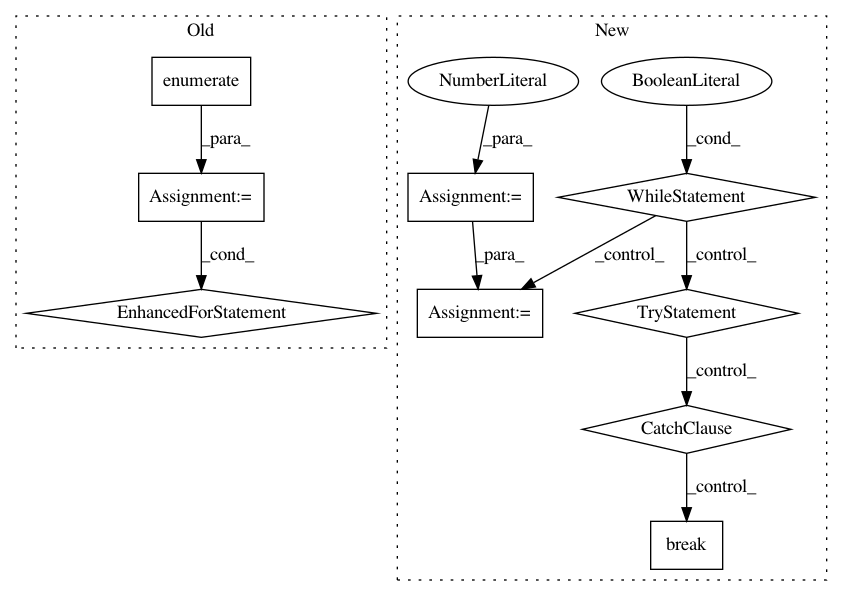

80373cedf76f85b47de78080712f508a46c5345c,open_seq2seq/models/text2text_test.py,BasicText2TextWithAttentionTestOnHorovod,test_train,#BasicText2TextWithAttentionTestOnHorovod#,57
Before Change
with self.test_session(use_gpu=True) as sess:
tf.global_variables_initializer().run()
for num in range(0, 2):
for i, model_dict in enumerate(model.data_layer.iterate_one_epoch()):
loss, _ = sess.run(
[model.loss, model.train_op],
feed_dict=model_dict,
)
if __name__ == "__main__":
tf.test.main()
After Change
train_config["data_layer_params"]["target_file"] = "./toy_data/train/target.txt"
train_config["use_horovod"] = True
//train_config["data_layer_params"]["repeat"] = False
step = 0
with tf.Graph().as_default():
model = config_module["base_model"](train_config, "train", None)
model.compile()
with self.test_session(use_gpu=True) as sess:
tf.global_variables_initializer().run()
sess.run(model.get_data_layer().iterator.initializer)
while True:
try:
loss, _ = sess.run(
[model.loss, model.train_op]
)
except tf.errors.OutOfRangeError:
break
step += 1
if step >=25:
break
if __name__ == "__main__":
tf.test.main()
In pattern: SUPERPATTERN
Frequency: 3
Non-data size: 9
Instances
Project Name: NVIDIA/OpenSeq2Seq
Commit Name: 80373cedf76f85b47de78080712f508a46c5345c
Time: 2018-05-16
Author: okuchaiev@nvidia.com
File Name: open_seq2seq/models/text2text_test.py
Class Name: BasicText2TextWithAttentionTestOnHorovod
Method Name: test_train
Project Name: NVIDIA/OpenSeq2Seq
Commit Name: 679a897a5974c59c4b09361c6e9974e0096533d2
Time: 2018-05-14
Author: igor.a.gitman@gmail.com
File Name: open_seq2seq/utils/funcs.py
Class Name:
Method Name: train
Project Name: NVIDIA/OpenSeq2Seq
Commit Name: 80373cedf76f85b47de78080712f508a46c5345c
Time: 2018-05-16
Author: okuchaiev@nvidia.com
File Name: open_seq2seq/models/text2text_test.py
Class Name: BasicText2TextWithAttentionTest
Method Name: test_train